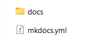

Pràctica 3: Mkdocs - Github Pages¶
::: important
Objectius
En aquesta pràctica desplegarem una pàgina web estàtica amb MkDocs a GitHub Pages.
Per això, hauràs de seguir els passos següents:
- Aprendre a utilitzar MarkDown
- Aprendre a utilitzar MkDocs
- Aprendre a utilitzar GitHub Pages
- Desplegar una pàgina web estàtica
:::
Generadors de pàgines estàtiques¶
En els darrers anys s’han desenvolupat programes d’ordinador que ens permeten de manera senzilla generar llocs web estàtics.
Estan programats en diferents llenguatges que inclouen un motor de plantilles per facilitar la generació del codi HTML.
És fàcil trobar diferents temes (fitxers de fulls d’estil) per canviar l’aspecte de les pàgines generades . L’usuari final només s’ha de preocupar del contingut.
Normalment el contingut s’escriu en un llenguatge de marques senzill com Markdown.
Una vegada generat el lloc estàtic només hem de desplegar el lloc al nostre servidor en producció. Tenim molts generadors de pàgines estàtiques: Jekyll, Hugo, Pelican, etc. Pots trobar una llista completa a: \textcolor{cerulean}{Site Generators}.
Nosaltres farem servir MkDocs.
Desplegament del nostre lloc web¶
Una vegada generada la nostra pàgina podem desplegar-la al nostre servidor en producció.
Podem tenir un servidor web propi (que administrem nosaltres), o utilitzar serveis de hosting per implantar les nostres pàgines. En aquest cas farem servir un hosting extern per desplegar la nostra pàgina.
Els serveis moderns per allotjar pàgines estàtiques poden proporcionar mètodes de desplegaments automàtics o semiautomàtics, i solen utilitzar repositoris git (l’ús de servidors FTP està desapareixent).
Els hostings que podem fer servir: Netlify, Sorgeix, GitHub Pages, GitLab Pages, render, Firebase, Vercel, Neocities, quantcdn, etc. Nosaltres utilitzarem GitHub Pages.
Alguns d’aquests serveis et permeten de manera automàtica generar-hi la pàgina estàtica (Integració Contínua). A la nostra pràctica no farem servir aquesta característica. La pàgina es genera al nostre ordinador i posteriorment es desplega al hosting extern.
Si ens permet diverses maneres de pujar la pàgina al hosting sempre triarem l’ús de repositori git.
MkDocs¶
MkDocs és un generador de llocs web estàtics que ens permet crear de manera senzilla un lloc web per documentar un projecte.
El contingut del lloc web està escrit en text pla en format Markdown i es configura amb un únic fitxer de configuració en format YAML.
Themes (fulls d’estil) per a MkDocs¶
Els temes que s’inclouen per defecte a MkDocs són:
- mkdocs
- readthedocs
És possible utilitzar altres temes desenvolupats per tercers o desenvolupar el nostre propi tema. A la wiki del projecte MkDocs podeu trobar un llistat de tots els themes que hi ha disponibles actualment.
En aquesta pràctica farem servir el theme Material que ha estat desenvolupat per Martin Donath. A la web oficial de Material for MkDocs trobem una guia de referència sobre com utilitzar i configurar el tema.
Comandaments més importants de MkDocs¶
-
Crear un nou projecte (Comanda: new)
# crearà la carpeta 'nom_projecte' mkdocs new prova INFO - Creating project directory: prova INFO - Writing config file: prova\mkdocs.yml INFO - Writing initial docs: prova\docs\index.md
-
Crear la pàgina web (Comanda: build)
- Llançar un servidor web local per comprovar com quedarà la pàgina web abans de publicar-la (Comanda: serve)# des de la carpeta nom_projecte crearà el lloc web a partir dels arxius .md ubicats en el directori 'docs' mkdocs build INFO - Cleaning site directory INFO - Building documentation to directory: C:\Users\espem\prova\site INFO - Documentation built in 0.08 seconds# Per defecte se servirà en 'http://127.0.0.1:8000' mkdocs serve INFO - Building documentation... INFO - Cleaning site directory INFO - Documentation built in 0.97 seconds INFO - [20:01:45] Watching paths for changes: 'docs', 'mkdocs.yml' INFO - [20:01:45] Serving on http://127.0.0.1:8000/
{kind=link}
{kind=link}
-
Publicar la documentació a GitHub Pages (Comanda: gh-deploy)
- Activa Pages en Github
\textcolor{cerulean}{Publicant el site en Github Pages}
# Quan estiga activat 'Pages' en Github mkdocs gh-deploy::: warning La primera vegada que faces el desplegament caldrà modificar la branca del desplegament en Pages a la que s’ha creat com a gh-pages :::
-
Mostrar les opcions i comandaments a utilitzar amb MkDocs
mkdocs -h
Què has de fer?¶
En aquesta pràctica desplegarem una pàgina web estàtica amb MkDocs i GitHub Pages.
Per això, segueix els passos següents:
- Crea un nou projecte de MkDocs al teu ordinador.
- Escriu la documentació del vostre projecte en format Markdown.
- Genera la pàgina web amb MkDocs.
- Crea un repositori al GitHub per al teu projecte.
- Puja la pàgina web a GitHub Pages.
- Comprova que la URL de la teua pàgina web a GitHub Pages funciona correctament.
Què has de lliurar?¶
Com has desplegat la teua pàgina web a GitHub Pages? La pàgina web es visualitza correctament?
::: note
Pràctica 03: Github Pages
Lliurar la documentació de les passes fetes. Incloure la url a la teua pàgina de github.
:::